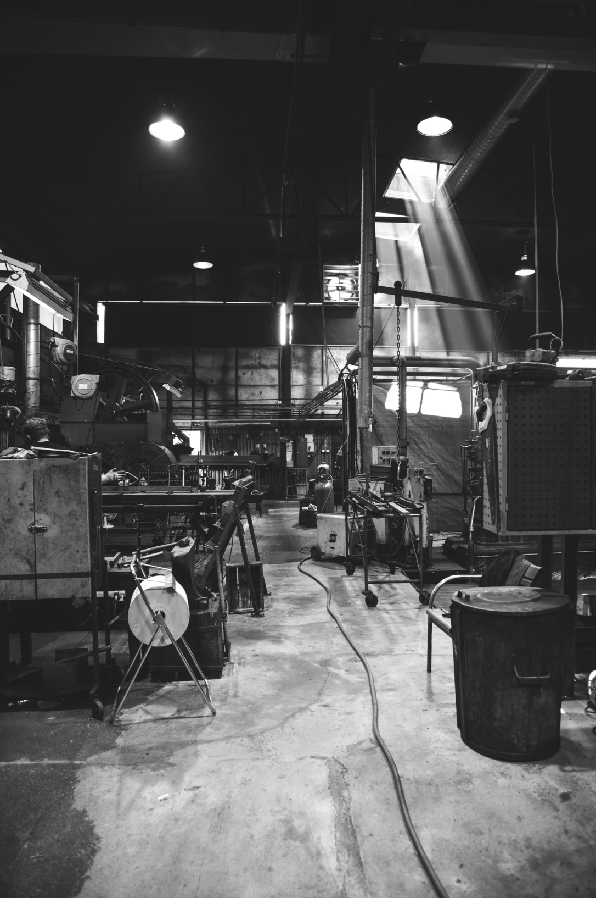

Uma empresa que cresce, um passo de cada vez
A laborar desde 1969 a Primus Vitória está mais próxima de si e do ambiente. Especializada em revestimento a empresa sofreu grandes mudanças desde o seu início adaptando-se às tecnologias e a um mercado cada vez mais exigente. O ambiente, a qualidade, a eficiência e a modernidade têm sido factores determinantes de mudança e actualização de forma a satisfazer os nossos clientes.


Do tradicional ao moderno
Dando continuidade à produção do azulejo tradicional, a Primus Vitória tem uma vasta paleta de cores e séries contemporâneas, acompanhando a arquitectura actual.